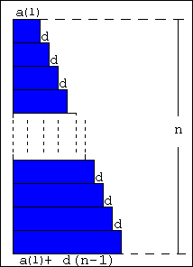

|
The arithmetical progression of first term = a(1), common difference =
d, number of terms = n and last term = a(1) + d(n-1) exists. The sum of the arithmetical progression = (2a(1) + d(n-1))n/2. |
 |
How to use this applet1.Press "+" or "-" button.2.Press "Define" button. 3.Press "Rotation" button. 4.Press "Shift" button. |